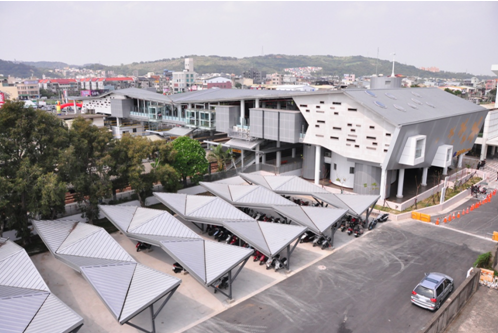

以開放空間橫亙東西兩側，象徵城市的立體穿廊
有別於東側的舊站體，新站建構出開放與連續的空間。在南北向列車往來的同時，苗栗車站的東西兩側也開始有活動的發生。它處於四面發達的車流與人流當中，成為一個代表性的公共場域，承載過境的旅客以及休憩的居民。以山稜線為發想，綿延東西的跨站走廊是嶄新的城市藝廊。
輕量化的站體，增添旅途通透感
在不影響火車行駛的前提下採用鋼骨結構跨站式設計，加快了施工速度，符合未來鐵路高架化的前置需求。鋅鋁合金板屋頂讓抬升的空中走廊更加輕盈。使用鏡面反射天花營造雙倍的內部高度，亦增加旅客行走時的通透感。
自然通風採光，在微風中塑造永續意象
考量車站高度旅客流動量，於北向設置了大面開窗讓空氣流通，自然通風與採光達到節能的效果。運用當地的氣候環境，輔以再生能源的設備如風力發電機與太陽能光電板。
提供生活休憩的空間，活絡地方文化特色
西站的集會場亦是一座半戶外舞台。人們坐在木製階梯上，時而透過壁面的開口遠望，時而對內欣賞街頭藝人的表演，成就多樣化的活動。延續西側舞台的無障礙動線形成太陽能大道，讓有限的空間成就多元的應用，為即將規劃發展的西側商圈帶來了便捷的步行網絡。